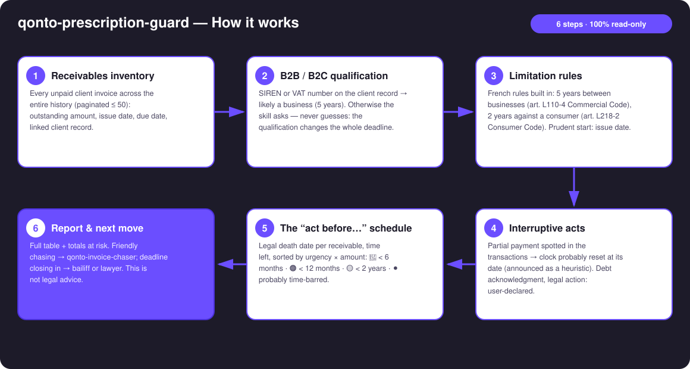
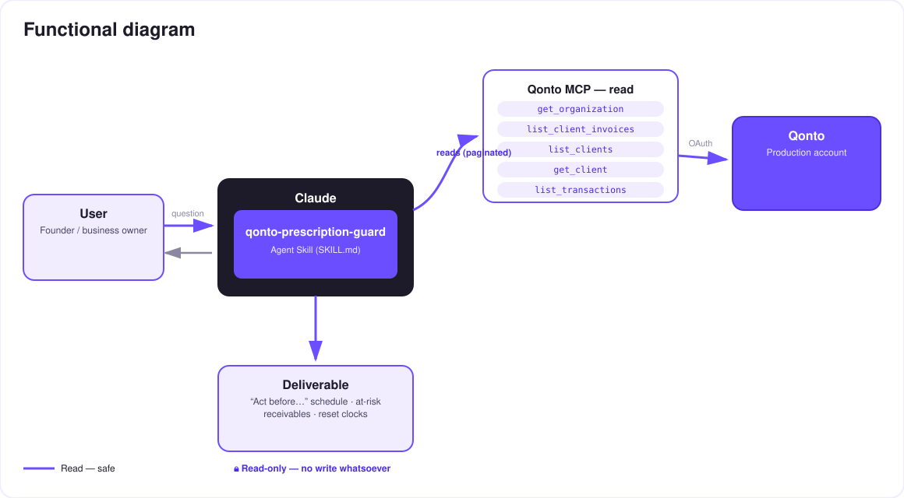

Every unpaid invoice has a legal death date — the skill finds it, and tells you by when to act.
An unpaid invoice doesn't die when you forget it — it dies when the limitation period runs out: 5 years between businesses (art. L110-4 French Commercial Code), 2 years against a consumer (art. L218-2 French Consumer Code). And the reverse trap is real too: a partial payment resets the clock — receivables you wrote off may still be alive.
Every unpaid client invoice, across the entire history — old, messy invoices are exactly the point.
SIREN / VAT number on the client record → likely a business (5 years); otherwise the skill asks — certainty is never claimed.
Partial payment spotted in the transactions → "period probably reset on [date] — confirm with a lawyer".
A death date per receivable, time left, sorted by urgency × amount: 🔴 < 6 months · 🟠 < 12 months · 🟡 < 2 years · ⚫ probably time-barred.
| Prerequisite | Detail | Required |
|---|---|---|
| Qonto production account | Adapts to any organization — get_organization first, nothing hardcoded | ✅ |
| Country | Limitation rules: France only. Other Qonto countries (DE, ES, IT…): age-of-receivables report, no legal qualification, never an invented rule | ℹ️ detected |
| Qonto MCP connected | Official connector (claude.ai / Claude Desktop), OAuth login | ✅ |
| Client invoicing in Qonto | The skill reads list_client_invoices — invoices issued outside Qonto aren't visible | ✅ |
| Client records filled in | SIREN / VAT number → automatic B2B qualification; otherwise the skill asks | ⭕ recommended |


100% read-only — there is nothing to approve: the skill creates nothing, modifies nothing, moves nothing. Every arrow is solid (risk-free reads). The risk isn't in the tool, it's in the calendar: time is what acts here, not the skill. And the report is not legal advice — a lawyer validates before acting or writing off.
| Situation | Period | Legal basis |
|---|---|---|
| Debt between businesses (or arising from the debtor's commercial activity) | 5 years | art. L110-4 Commercial Code |
| Professional against a consumer (private individual, non-professional purpose) | 2 years | art. L218-2 Consumer Code |
| Starting point: day the creditor knew the facts — for an invoice, prudently the issue date | — | art. 2224 Civil Code |
| Interruption → the clock fully restarts: acknowledgment of the debt (a partial payment counts as a tacit one), legal action, enforcement act | new full period (art. 2231) | art. 2240–2244 Civil Code |
| ⚠️ NOT interruptive: reminders, emails, even a registered dunning letter | — | settled case law |
Worth knowing: limitation must be raised by the debtor — a judge won't apply it automatically (art. 2247). In practice, treat the date as the death of the claim; still, the skill never declares a receivable definitively dead… nor definitively alive.
| Output | Format | When |
|---|---|---|
| Conversation reply | Markdown tables: "act before…" schedule, totals at risk within 6/12 months, detected resets | Always — the baseline |
| Interactive timeline | HTML file/artifact: one bar per receivable (start → death date), today marker, color by urgency, width by amount | When the host renders files (claude.ai artifacts, Claude Desktop, Claude Code); automatic fallback to tables otherwise |
| "Probably time-barred" list | Separate report section, never mixed with living receivables | Every scan |
The ≤ 3-minute demo attached to the PR walks through: the problem (receivables dying silently) → the scan and the schedule → the highlight: a detected partial payment resurrecting an invoice the user had written off → the final timeline and the pipeline with qonto-invoice-chaser. The detailed shooting script is kept internal (outside the repository).
| Idea | Effort | Note |
|---|---|---|
| Calendar reminders on "act before…" dates (calendar MCP detected dynamically) | Low | Optional multi-MCP — activates if present, otherwise the skill says so and continues |
| Country modules (DE: 3 years §195 BGB, ES, IT…) | Medium | Same engine, per-country period tables |
| Suspension tracking (mediation, art. 2238 Civil Code) | Medium | Declarative — refines the dates |
| Draft handoff letter for the bailiff | Low | Text output, still zero MCP writes |